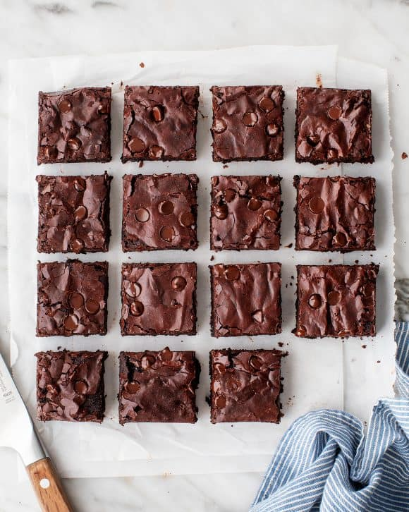

Best Homemade Brownies

Description
The BEST brownie recipe! With crispy edges, fudgy middles, and rich chocolate flavor, these homemade brownies will disappear in no time.
Ingredients
- 1 1/2 cups granulated sugar*
- 3/4 cup all-purpose flour
- 2/3 cup cocoa powder, sifted if lumpy
- 1/2 cup powdered sugar, sifted if lumpy
- 1/2 cup dark chocolate chips
- 3/4 teaspoons sea salt
- 2 large eggs
- 1/2 cup canola oil or extra-virgin olive oil**
- 2 tablespoons water
- 1/2 teaspoon vanilla
Steps
- Preheat the oven to 325°F. Lightly spray an 8x8 baking dish (not a 9x9 dish or your brownies will overcook) with cooking spray and line it with parchment paper. Spray the parchment paper.
- In a medium bowl, combine the sugar, flour, cocoa powder, powdered sugar, chocolate chips, and salt.
- In a large bowl, whisk together the eggs, olive oil, water, and vanilla.
- Sprinkle the dry mix over the wet mix and stir until just combined.
- Pour the batter into the prepared pan (it'll be thick - that's ok) and use a spatula to smooth the top. Bake for 40 to 48 minutes, or until a toothpick comes out with only a few crumbs attached (note: it's better to pull the brownies out early than to leave them in too long). Cool completely before slicing.*** Store in an airtight container at room temperature for up to 3 days. These also freeze well!
Notes
- *If you'd like to reduce the sugar, I've had success with 1 cup granulated sugar instead of 1 1/2 cups.
- **I like to use olive oil because it's what I keep on hand and I enjoy the pairing of olive oil with chocolate. Keep in mind that you will taste it here. For a more neutral flavor, use canola oil.
- ***When these brownies come out of the oven, they'll be super gooey in the middle. Allow them to cool completely, about 2 hours, before you slice into them to give them a chance to set up. They'll continue to firm up the longer they're out of the oven. If you still prefer a firmer brownie, store them in the fridge.